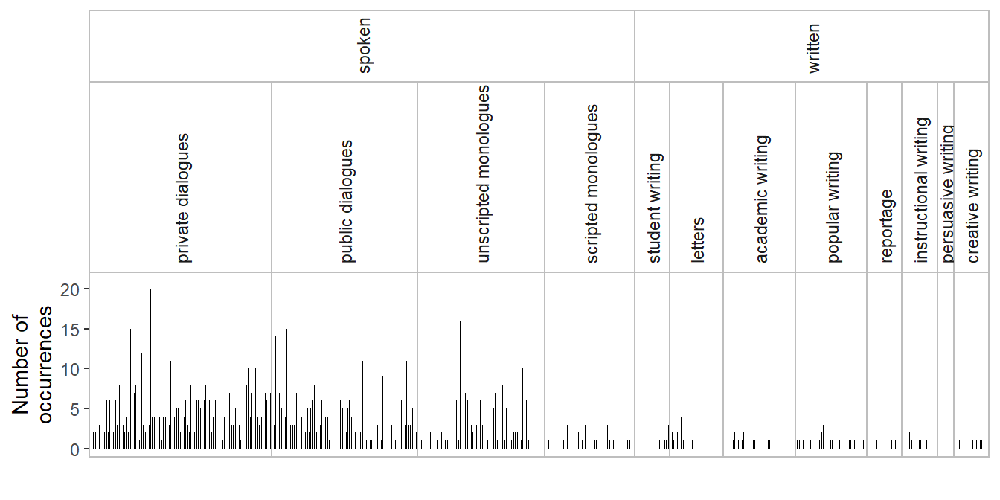

Drawing spike graphs to examine dispersion across text files
corpus linguistics
dispersion
data visualization
This blog post describes how to draw spike graphs that visualize the dispersion of an item across the text files in a corpus. These graphs are enriched with information about corpus design (and structure).
# install development version directly from Github#pak::pak("lsoenning/tlda")#pak::pak("lsoenning/wls")library(tlda) # for access to datasetslibrary(wls) # for custom ggplot themelibrary(tidyverse) # for data wranglinglibrary(ggh4x) # for drawing nested facets in ggplot
I first came across spike graphs as a tool for visualizing the dispersion of an item in a corpus in a paper by Church and Gale (1995). Since this graph type is a great visual aid for examining and illustrating the distribution of an item across the text files in a corpus, I have since started to use spike graphs in my own work (e.g. Figure 8 in Sönning -Sönning (2025a) and Figure 2 in Sönning -Sönning (2025b)). The following figure, which appears in Sönning (2025a, 21), shows the distribution of which across the 500 text files in the Brown Corpus. Each spike denotes a text file, and gaps represent documents that contain no instances of this item. Text files are grouped by macro genre (four categories marked at the bottom), and genre (15 categories marked at the top). The ‘hairy’ appearance of the spike graph indicates that which is a common word – it appears in almost every document. In this blog post, I describe how to draw such annotated spike graphs in R using the {ggplot2} package.
Spike graph showing the distribution of which in the Brown Corpus
Data format
To draw a spike graph, we need the following data for each text file in the corpus:
The frequency of the item in the text file
The length of the text file (number of word (and non-word) tokens)
Text metadata (e.g. mode, macro genre, genre, subgenre)
Our illustrative item will be actually, and we will look at its distribution in ICE-GB (Nelson, Wallis, and Aarts 2002). Frequency information for actually in the 500 text files in ICE-GB is available in the dataset biber150_ice_gb (see help("biber150_ice_gb")), which is part of the {tlda} package (Sönning 2025c). Let’s look at a small excerpt from this object, which is a term-document matrix:
Each column represents a text file
Each row represents an item (except for row 1, word_count, which gives the length of the text file)
We extract the relevant data for actually. Importantly, this table includes every text file in the corpus, even if the number of occurrences of actually is 0.
Now we need to add metadata for the 500 text files, which are provided in the dataset metadata_ice_gb in the {tlda} package (Sönning 2025c). See help("metadata_ice_gb") for more information about this data table.
Importantly, the classification variables denoting text varieties (text_category, macro_genre, and genre) are already ordered based on the sampling frame that informs the design of the ICE family of corpora. In metadata_ice_gb, they are represented as ordered factors. This is important for visualization, because we want to order the text files (and higher-level text categories) in a sensible way.
Next, we combine the two tables. The linking column is text_file, which allows us to join ice_gb with metadata_ice_gb:
Now we are ready for plotting. The following annotated code draws a spike graph. It uses the function facet_nested() from the {ggh4x} package (van den Brand 2024) to draw nested facets. The function theme_spike_graph() from the {wls} package (Sönning 2025d) adjusts the ggplot2 theme for a clean appearance. In the following figure, we add two structural annotation layers as facets above the graph: mode (2 categories) and macro genre (12 categories):
ice_actually |>ggplot(aes(x = text_file, # text_file as x-variabley = n_tokens)) +# frequency of item as y-variablegeom_segment(aes(xend = text_file), # draw spikes for each text fileyend =0, # spike starts at 0linewidth = .2) +# draw thin linesfacet_nested( # nested facets with the {ggh4x} package: . ~ mode + macro_genre_nice, # macro genre facets nested within mode scales ="free", # allow x-scale to vary across facetsspace ="free_x", # facet width proportional to # of textsstrip =strip_nested( # allow height of facet labels abovesize ="variable")) +# graph to vary theme_bw() +# specify theme_bw() as basistheme_spike_graph() +# custom theme for spike graphscale_x_discrete(expand =c(0,0)) +# avoid left/right padding in facets ylab("Number of\noccurrences") +# add y-axis titlexlab("") +# no title on x-axistheme( # strip.text.x.top =element_text( # format facet labelsangle =90, hjust =0)) # rotate by 90 degrees and left-align

Figure 1: Spike graph showing the distribution of actually in ICE-GB: Number of occurrences (absolute frequency) in each text file.
Spike graph showing normalized frequencies
Since the text files in ICE-GB are all around 2,000 words long, it was OK for our spike graph to show the number of occurrences of actually in each text file (i.e. absolute frequencies). It is usually more appropriate, however, to show relative frequencies (i.e. normalized frequencies), because text files will differ in length. Doing so requires an intermediate step: We add a column to the data frame ice_actually, which gives the normalized frequency of actually in the text file. Here, we opt for frequency per 1,000 words as a basis:
Nelson, Gerald, Sean Wallis, and Bas Aarts. 2002. Exploring Natural Language: Working with the British Component of the International Corpus of English. John Benjamins. https://doi.org/10.1075/veaw.g29.
Sönning, Lukas. 2025a. “Advancing Our Understanding of Dispersion Measures in Corpus Research.”Corpora 20 (1): 3–35. https://doi.org/10.3366/cor.2025.0326.
![]()